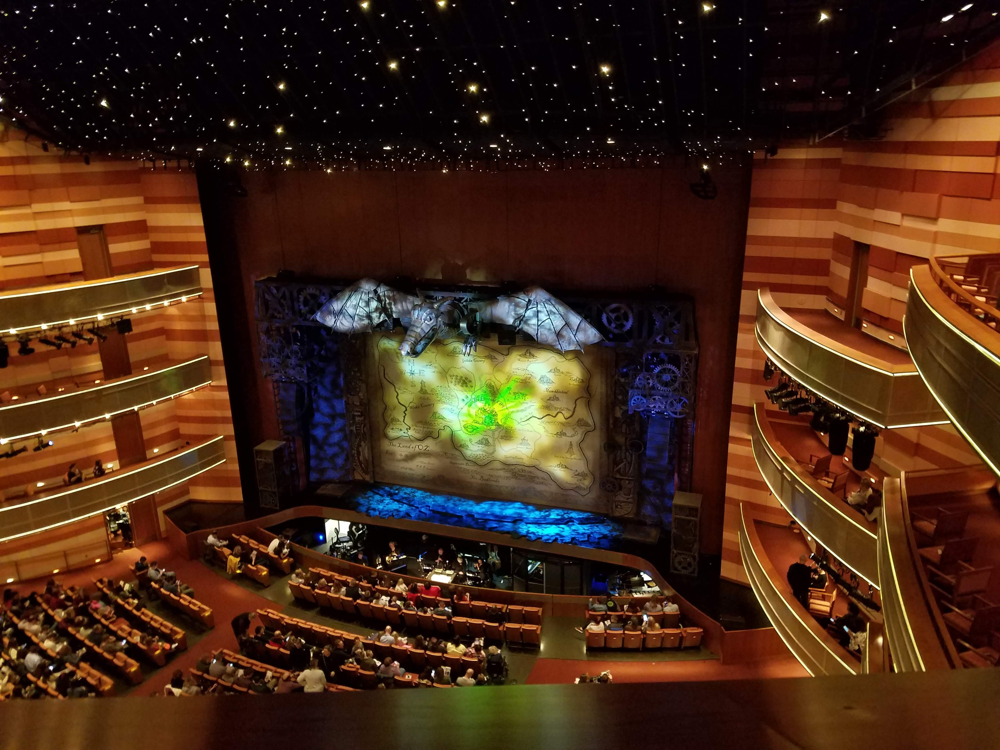

Wicked
Wicked holds a very special place in my heart. I’ve grown up listening to the music and idealizing Idina Menzel who was casted as the main protagonist, Elphaba, in the original cast. This story is wonderful and intriguing in the ways that it fits into the original world of The Wizard of Oz. It’s a story that I never would have imagined coming from the world Dorothy found herself in. This play is heartwarming, and the music is endlessly catching, which is why it’s usually playing in my head, competing with whatever else I was listening to that day. I absolutely recommend this play to anyone, theater lovers or not.
Dear Evan Hansen

Dear Evan Hansen has been close to my heart ever since I first heard the music six years ago. This was a touching play that had everyone in my family in tears by the end. For me it was incredibly relatable as it deals with themes of loneliness and feeling like no one knows that you’re there, which are feelings everyone has sometime in their lives. The music powerfully portrays that “no one is alone” and that we all have some impact that we make in this world, no matter how big or small. The play has a lot of profanity and vulgarity, so it isn’t as high on my list as others, but I highly recommend giving the soundtrack a listen.
Hadestown

Hadestown was a surprising musical to me. I didn’t have much prior knowledge to seeing it, other than a loose understanding of the Greek mythology that the play features. Although not feeling attached to it before seeing this musical, I can say that I’m definitely attached afterwards. This has been added to soundtracks that I listen to on repeat because the music is so good and different than so many other musicals I’ve heard/seen. It’s a touching story with an ending that leaves you wanting more. This one is definitely worth the watch.
The Band's Visit

The Band’s Visit was an interesting play. I had heard very little about it before I saw it, which actually fits well with the theme of the play. It opens with a message on a projector screen saying, “Once, not long ago, a group of musicians came to Israel from Egypt. You probably didn’t hear about it. It wasn’t very important.” This instantly grabbed my attention and made me excited for the play. This then went on to become one of my favorites of all time, although most of the people I’ve talked to thought it boring and dry. These are some of the reasons I loved it so much though. It was dry and sort of boring, but I think that was on purpose and represented how our lives feel sometimes. Either way, it was a wonderful play and I would highly recommend you see it as well to get your own opinion on it.